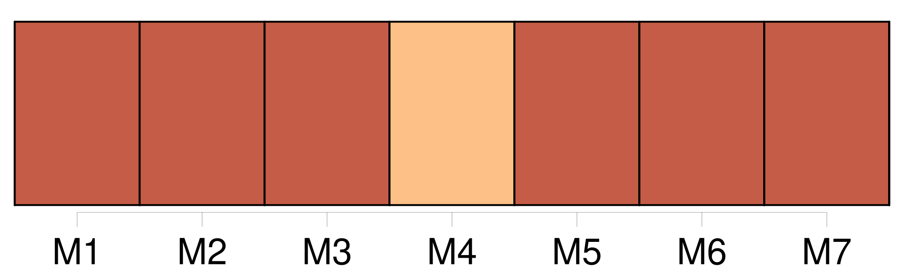

Longueur nb maillons : 8 mentions |
 |
Un seul regard trop plein de complaisance jeté sur une femme pensa causer la perte de [mon âme] ; mais enfin, avec l’ aide de Dieu et de mon saint patron, je suis parvenu à chasser l’ esprit malin qui s’ était emparé de moi. [51 phrases] Je dis oui cependant, lorsque je voulais dire non, lorsque tout en moi se révoltait et protestait contre la violence que ma langue faisait à [mon âme] : une force occulte m’ arrachait malgré moi les mots du gosier. [15 phrases]
» [86 phrases]
Sans doute, elle le savait, car son âme était trop sympathiquement liée à [la mienne] pour n’ en point ressentir les moindres ébranlements, et c’ était ce sentiment qui l’ avait poussée, encore enveloppée de ses voiles de nuit, à monter sur le haut de la terrasse, dans la glaciale rosée du matin. [116 phrases] Tout en me demandant des nouvelles de ma santé d’ un ton hypocritement mielleux, il fixait sur moi ses deux jaunes prunelles de lion et plongeait comme une sonde ses regards dans [mon âme] [158 phrases] Il me regarda attentivement et me dit : « Non content de perdre [votre âme] , vous voulez aussi perdre votre corps. [31 phrases] Je sais où Clarimonde a été enterrée ; il faut que nous la déterrions et que vous voyiez dans quel état pitoyable est l’ objet de votre amour ; vous ne serez plus tenté de perdre [votre âme] pour un cadavre immonde dévoré des vers et près de tomber en poudre ; cela vous fera assurément rentrer en vous -même. [37 phrases] La paix de [mon âme] a été bien chèrement achetée ; l’ amour de Dieu n’ était pas de trop pour remplacer le sien. |

|
Il est possible de télécharger la ressource sur la page Ortolang |
Si vous avez des questions ou vous voyez des erreurs, merci d'envoyer un mail à silvia.federzoni89@gmail.com |